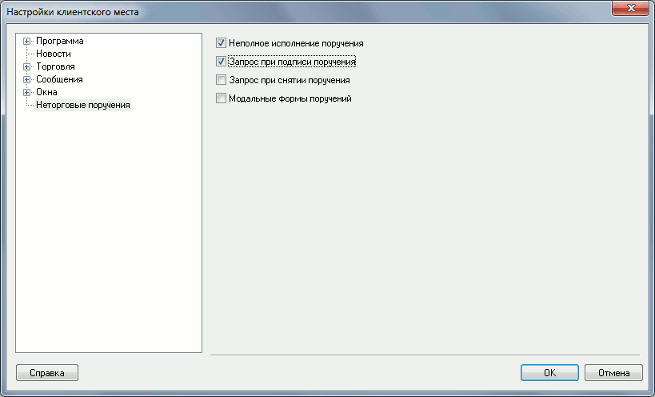

Неторговые поручения
Введение
Неторговые поручения представляют собой поручения брокеру на
перемещение средств клиента между счетами – ввод средств в торговую систему,
вывод обратно на счет клиента, перевод между разными счетами либо торговыми
системами.
Применение неторговых поручений является дополнительной возможностью системы
QUIK, которая появляется при наличии на сервере специального Модуля
неторговых поручений.
Для использования неторговых поручений на Рабочем месте клиента необходимо,
чтобы:
- данному пользователю был открыт доступ к неторговым поручениям на сервере
QUIK;
- в папке с программами QUIK находился файл INSTRCLIENT.DLL;
- в список принимаемых классов был включен класс «Неторговые
поручения»;
При соблюдении этих условий в меню программы появится пункт «Неторговые
поручения».
Для возможности подтверждения неторговых поручений и принятых файлов (отчетов) одноразовыми паролями необходимо в программе QUIK Administrator (вкладка «Общие права», поле «для SMS» на форме редактирования пользователя) указать номер телефона (один или несколько) для получения одноразовых паролей.
Принцип работы
- Работа с неторговыми поручениями напоминает работу с заявками. Для того
чтобы видеть список отправленных поручений и их текущее состояние, нужно
создать «Таблицу поручений», используя пункт меню
программы Расширения / Неторговые поручения / Таблица поручений. В
этой таблице отображаются поручения всех типов и состояние их обработки
специалистами брокера. Двойным нажатием левой кнопки мыши на строке можно
открыть поручение и посмотреть его параметры.
- Новые поручения создаются выбором соответствующего вида поручения из пункта меню
Расширения / Неторговые поручения / [вид
поручения]. На экране появится форма с полями для заполнения. Для
минимизации возможных ошибок при заполнении, реквизиты клиента выбираются из
справочника, заполняемого на сервере брокера.
- Заполненное поручение отправляется на сервер брокерской системы QUIK, где
последовательно проходит проверку и подтверждение сотрудниками брокера. После
того, как все необходимые подтверждения получены, происходит исполнение
поручения – изменяются позиции по указанному инструменту (или денежным
средствам).
- При подтверждении поручения сотрудниками брокера могут быть начислены
дополнительные платежи за исполнение поручения, указываемые в стандартных
полях:
- «Налог» - сумма налогов и сборов, взимаемых при исполнении поручения,
указывается сотрудником брокера.
- «Комиссия депозитария» - сумма платежа, удерживаемая в пользу депозитария.
Если с клиента взимается задолженность по депозитарным сборам, то она
указывается брокером в этом поле.
- «Комиссия за выдачу наличных» - сумма платежа, удерживаемая при расчетах через
кассу.
- Поручение может быть отклонено одним из специалистов брокера. В этом
случае оно получает статус «Снято», который отображается в Таблице
поручений. Чтобы увидеть причину отклонения, указанную данным специалистом,
нужно выбрать поручение в Таблице и открыть его двойным нажатием левой кнопки
мыши. В поле «Комментарий отмены» будет указано основание для отклонения.
- Отправленное поручение, имеющее статус «Активно», пользователь может
отменить. Для этого нужно сформировать запрос на отмену поручения, выбрав из
контекстного меню на поручении пункт «Запрос на отмену поручения» и ввести
текст-пояснение в открывшемся окне. Этот запрос так же проходит подтверждение
сотрудниками брокера.
- Поручение может требовать подтверждения одноразовым паролем. Отправка SMS-сообщений с одноразовым паролем производится на номера для SMS, заданные в программе QUIK Administrator.
Виды поручений
Поддерживаются следующие виды поручений, доступные через пункт меню
Расширения / Неторговые поручения / [вид
поручения]:
- «Вывод ДС» - поручение на вывод денежных
средств с брокерского счета на расчетный счет клиента в банке, либо на
получение их в наличной форме,
- «Вывод ЦБ» - поручение на вывод ценных бумаг из
депозитария торговой системы (НРД, ДКК) в реестр эмитента либо на другой счет
внутри данного депозитария,
- «Ввод ДС» - поручение на перевод денежных
средств, зачисленных клиентом на брокерский счет, в торговую систему биржи,
- «Ввод ЦБ» - поручение на перевод ценных бумаг в
депозитарий торговой системы (НРД, ДКК) из реестра или другого счета в этом
депозитарии.
- «Перевод ДС» - поручение на перевод денежных
средств между счетами и торговыми системами.
- «Перевод ЦБ»
- поручение на перевод ценных бумаг между счетами.
- «Конвертация валют» - поручения на конвертацию
одной валюты, хранящейся на счете клиента, в другую.
- «Свободная форма» - поручение
любого вида, представленное в виде текстового описания.
- «Конвертация ЦБ» - поручения на конвертацию
одной ценной бумаги, хранящейся на счете клиента, в другую.
- «Размещение ЦБ»
- поручения на участие в размещении ценных бумаг.
Настройка
меню Расширения / Неторговые поручения / Настройки

- «Неполное исполнение поручений» - разрешить исполнение поручений на
неполную сумму, если остатка средств на счете клиента недостаточно для
покрытия расходов по сделке.
- «Запрос при подписи поручения» - запрашивать подтверждение операции при
подписании поручения.
- «Запрос при снятии поручения» - запрашивать подтверждение операции при
снятии поручения.
- «Модальные формы поручений» – включить режим модальных форм поручений, при котором невозможно открыть новую форму подачи или подписи поручения, пока не закрыта предыдущая форма.